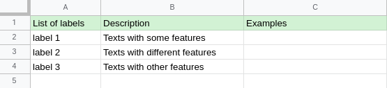
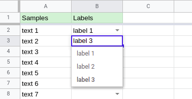
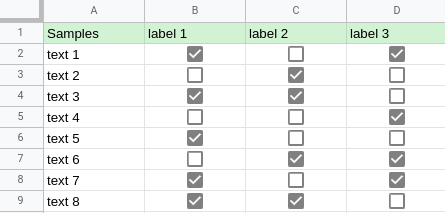
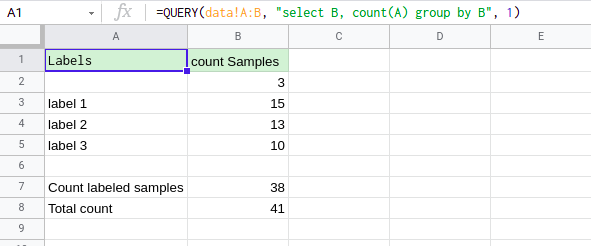
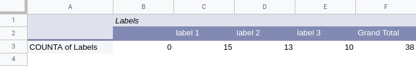

There is a lot of tools that can assist you in the data labelling process. I’m going to show what the labelling can look like in Google Sheets, but you can use any spreadsheet program instead.
Labels description
Usually, I start with providing descriptions and examples of the defined classes. It helps to keep all data in one place and team members will always have an access to the info.

Using a dropdown list
Next, I define named ranges to provide data validation. It will show a warning if a label is out of the range. Additionally, you can use dropdown lists in the label cells.
Also, you can import the named ranges into other spreadsheets. In case of changes, the data will be updated in all documents.

Multi-labelled data
If you need to assign several labels to the samples, you can duplicate the rows with a different label or use checkboxes instead of dropdown lists. However, it becomes messy if there is a long list of labels.

Statistics
For tracking the labelling progress you can display some statistics using queries or pivot tables.


I prefer queries, as it is simpler and more familiar to me.
A spreadsheet is a powerful tool for a data scientist. It makes the process of text labelling simple, straightforward, flexible and can be useful in various data analysis tasks.